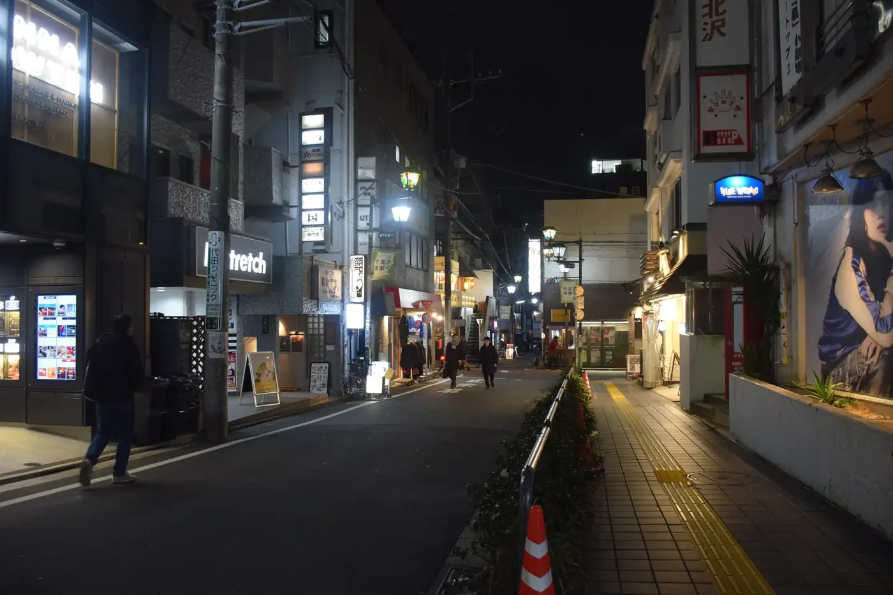
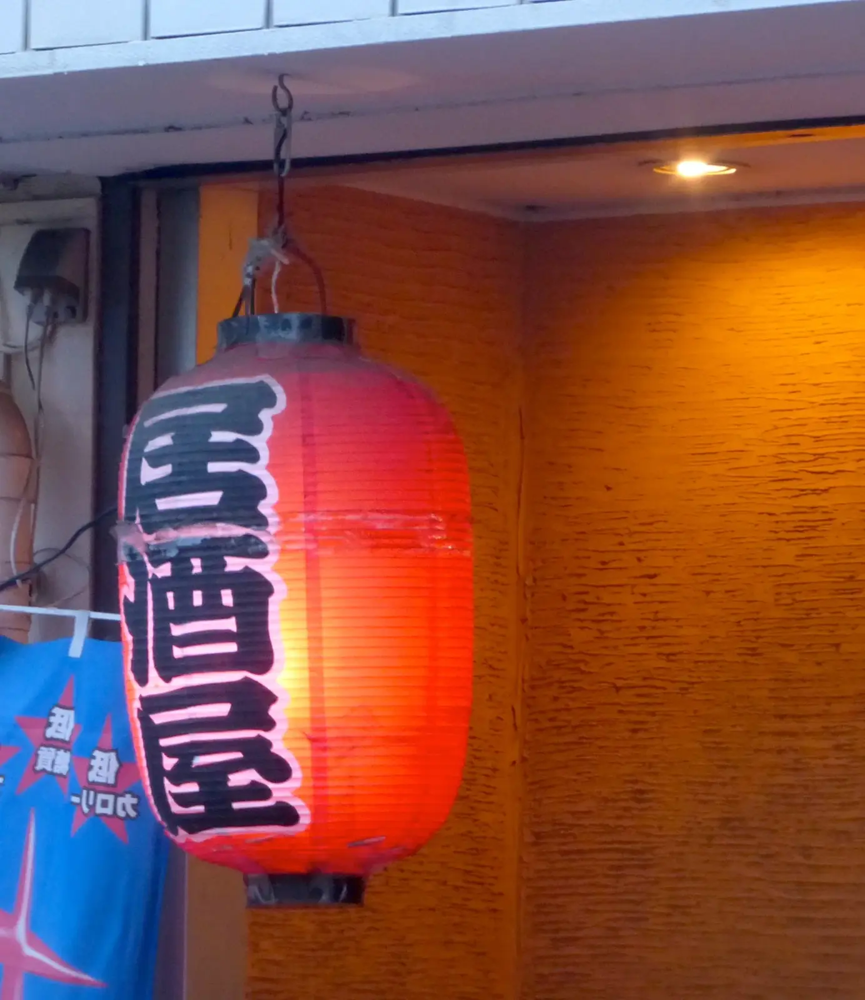

予約・アクセス
カウンターに、席をひとつ。
ネット予約は四名まで。五名以上や貸切は、15時以降にお電話ください。

道順
- 下北沢駅の南口へ小田急線・京王井の頭線
- 商店街をまっすぐ三分左手のレコード屋を過ぎて
- 赤ちょうちんの角を右へ二軒目、路地に煙が出ているのが目印
遅れそうなときはお電話を。予約の席は十五分お待ちします。

予約・アクセス
ネット予約は四名まで。五名以上や貸切は、15時以降にお電話ください。

遅れそうなときはお電話を。予約の席は十五分お待ちします。